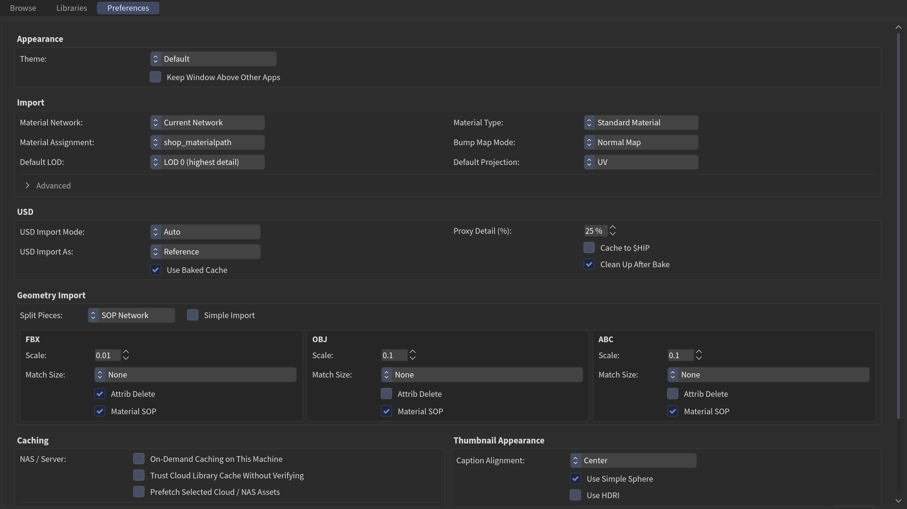

Preferences tab
Every setting on the Preferences tab applies live — there's no Save or Apply button, and nothing needs a restart. Settings are grouped top to bottom as below.

Reset a single setting
Ctrl+Middle-click any control to reset just that one to its default. The Reset to Defaults button (bottom right) resets them all — library paths are never touched.
Appearance
| Setting | What it does |
|---|---|
| Theme | Visual theme. Default inherits Houdini's look — on Houdini 22 it follows your live color theme (Edit ▸ Color Theme), accent and all, updating as you edit it. Minimal, Neutral (hueless greys — thumbnails are the only colour), and XSI (Softimage-inspired) are bundled skins. Drop more <name>.json files in the plugin's themes/ folder to add your own. |
| Keep Window Above Other Apps | When the browser floats in its own window, keep it above every other application's windows — not just Houdini's. No effect while docked in a pane. Saved per machine; the default matches your platform's native behavior (on for macOS, off for Windows). |
Import
How assets come into your scene.
| Setting | Options | Default |
|---|---|---|
| Material Network | Current Network (build where you're viewing — a per-asset matnet at the cursor, or directly inside a matnet/vopnet; /mat in a non-material context) · Global (shared /mat) · OBJ Context (a shared /obj/matnet) · SOP Context (per-asset matnet inside the geo network) |
Current Network |
| Material Assignment | shop_materialpath (explicit per-prim path) · Name Attribute (group by name string) |
shop_materialpath |
| Material Type | Standard Material · Open PBR Material | Standard Material |
| Bump Map Mode | Normal Map · Bump Map · Displacement | Normal Map (bump falls back when no normal exists) |
| Default Projection | UV · Triplanar (per-material override lives in the preview panel) | UV |
| Default LOD | LOD 0 (highest detail) · Lowest Detail · High / Source Mesh | LOD 0 |
The renderer has no preference: the toolbar selector is remembered across sessions, so your last choice is your engine on every launch.
Default LOD is where a multi-LOD asset starts: the inspector's LOD picker and folder drops from Explorer/Finder both default here. High / Source Mesh applies when the asset ships an unreduced source (e.g. Quixel High) and falls back to LOD 0 otherwise.
Advanced
Collapsed by default; click Advanced to expand.
| Setting | What it does | Default |
|---|---|---|
| Import Into Active Network | Import inside the network you're already in, if it's compatible; otherwise create a new container at the top level. | On |
| Default Create Instances | Default state for the per-asset Create Instances toggle — auto-adds a scatter chain to atlas/model/plant drops. | Off |
| Relative Material Node Path | Store shop_materialpath as a relative node path (../matnet/shader) instead of absolute. |
On |
| Force Absolute File Paths | Write absolute OS paths into the scene instead of $VAR/… tokens. |
Off |
| Handle External File Drops | Import textures, PBR sets, HDRIs, and models dragged from your OS file manager onto the network editor (while this panel is open). Off hands those drops back to Houdini. | On |
| Show Asset Counts | Append counts to nav-tree labels, e.g. Metals (42). | On |
| Show Unscanned Folders | Keep folders you excluded with Scan on This Machine (nav tree, right-click) visible as dimmed (not scanned) entries. Saved per machine. | On |
| Prefer 16-bit Textures | When a set ships 8- and 16-bit versions of a map, pick 16-bit. Applies on the next library refresh. | Off |
| Name Texture Nodes After File | Name texture nodes after the texture file (extension stripped) instead of the channel (basecolor, normal, …). Applies to newly imported materials. |
Off |
| Viewport Drop Targets Hit Component | A material dropped on geometry in the Scene Viewer goes to the part under the cursor (material slot / named part in OBJ, GeomSubset in Solaris), or the whole object when no part is found. Ctrl+drop flips this for one drop. | On |
| Debug Logging | Print diagnostic detail to the Python Shell: why a library re-scanned, which thumbnails failed to load, errors that are otherwise silent. JELIB_DEBUG=1 in the environment does the same for a session that cannot reach this panel. |
Off |
| Copy Diagnostics (button) | Copy build, Houdini, library and environment details plus the most recent log lines to the clipboard, ready to paste into a bug report. Works with Debug Logging off, but only what was logged since the panel opened is included. | — |
USD
How non-USD geometry (see Supported file formats) enters a Solaris/LOPs stage.
| Setting | Options | Default |
|---|---|---|
| USD Import Mode | Auto · SOP Create · Component Builder · Bake .usd | Auto |
| USD Import As | Reference · Sublayer | Reference |
| Use Baked Cache | Reference an up-to-date baked .usd directly instead of rebuilding the Component Builder chain. |
On |
| Proxy Detail (%) | Polyreduce percentage for the proxy purpose when baking (1–100). Also caps the collision (simproxy) hulls. Animated $F sequences bake neither. |
10 |
| Cache to $HIP | Write USD caches under $HIP/usd/… instead of next to the source asset — handy when the library folder is read-only or you'll collect with the hip later. |
Off |
| Clean Up After Bake | After baking, remove the Component Builder nodes and leave just the reference/sublayer. | On |
Import Mode in brief
Auto bakes a sidecar .usd when the source folder is writable, else falls
back to SOP Create (no disk write). Component Builder builds a live
chain. Bake .usd always writes <asset_dir>/usd/<name>.usd. A
rigged/animated FBX has its own skeleton-aware modes — see
Animation & sequences.
Geometry Import
Simple Import (off by default) brings geometry in as just a file/Alembic SOP plus an OUT null — skipping the xform, attribdelete, material, matchsize, and connectivity nodes.
Split Pieces — what happens when a model is made of several named objects:
| Option | What you get |
|---|---|
| Off | One output for the whole model. |
| SOP Network (default) | One extra output per named piece inside the geo. |
| OBJ Network | A subnet holding the import plus one geometry object per piece. |
Greyed out while Simple Import is on — that mode builds no chain to split.
Below it, one card per format — FBX, OBJ, ABC — each with the same four controls:
| Control | Options | FBX | OBJ | ABC |
|---|---|---|---|---|
| Scale | import scale (e.g. 0.01 = cm→m) | 0.01 | 0.01 | 0.01 |
| Match Size | None · Match Size · Match Size (Auto Scale) | None | None | None |
| Attrib Delete | strip helper/detail attributes | On | Off | Off |
| Material SOP | build the Material SOP | On | On | On |
Caching
| Setting | What it does |
|---|---|
| On-Demand Caching on This Machine | Per-machine master switch: pull remote-backed libraries into a local cache as you use them. Leave off on a machine that already has the assets locally. See Remote & cloud libraries. |
| Trust Cloud Library Cache Without Verifying | Skip re-checking cloud-synced libraries (Dropbox / OneDrive / iCloud / Synology Drive) for changes on every reload — much faster on a slow mount, but a plain Reload won't notice new or removed files. Off by default; saved per machine. See Remote & cloud libraries. |
| Prefetch Selected Cloud / NAS Assets | While browsing, download the selected asset from its remote source in the background so dropping it is instant. On-demand libraries only; saved per machine. |
| Thumbnail Cache | Folder for the pre-scaled thumbnail cache. Defaults to $JE_ASSET_BROWSER_CACHE (set in the package JSON). |
| Auto-generate on Save | Render a geometry thumbnail automatically when a 3D asset is saved via Save Asset…. Right-click → Generate Thumbnail always works regardless. |
Two buttons: Cache Thumbnails pre-scales every preview into the cache; Clear Cache deletes pre-scaled thumbnails and generated geometry, material, HDRI, and texture previews. For the full workflow — and the difference between generating and caching — see Make thumbnails.
Thumbnail Appearance
Controls how generated thumbnails look — see Make thumbnails.
| Setting | Options / effect | Default |
|---|---|---|
| Caption Alignment | Center · Left · Right | Center |
| Use Simple Sphere | Render on a plain sphere instead of the shaderball — better for tiling materials. | Off |
| Use HDRI | Light the preview with an HDRI instead of the default studio lights. | Off |
| HDRI Path | Custom HDRI file (enabled when Use HDRI is on). Leave empty for the HDA default. | HDA default |